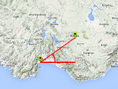

Example of calculation of the distance and angle between the locations.
Usage instructions:
Add this script to map GameObject.
Add this script to map GameObject.
DistanceAndDirectionExample.cs
/* INFINITY CODE 2013-2016 */
/* http://www.infinity-code.com */
using UnityEngine;
namespace InfinityCode.OnlineMapsExamples
{
[AddComponentMenu("Infinity Code/Online Maps/Examples (API Usage)/DistanceAndDirectionExample")]
public class DistanceAndDirectionExample : MonoBehaviour
{
/// <summary>
/// The coordinates of user.
/// </summary>
public Vector2 userCoordinares;
/// <summary>
/// The coordinates of the destination.
/// </summary>
public Vector2 markerCoordinates;
/// <summary>
/// The direction of the compass.
/// </summary>
public float compassTrueHeading = 0;
private void OnGUI()
{
if (GUI.Button(new Rect(5, 5, 100, 30), "Calc"))
{
// Calculate the distance in km between locations.
float distance = OnlineMapsUtils.DistanceBetweenPoints(userCoordinares, markerCoordinates).magnitude;
Debug.Log("Distance: " + distance);
int zoom = 15;
int maxX = 1 << zoom;
// Calculate the tile position of locations.
Vector2 userTile = OnlineMapsUtils.LatLongToTilef(userCoordinares, zoom);
Vector2 markerTile = OnlineMapsUtils.LatLongToTilef(markerCoordinates, zoom);
// Calculate the angle between locations.
float angle = OnlineMapsUtils.Angle2D(userTile, markerTile);
if (Mathf.Abs(userTile.x - markerTile.x) > maxX / 2) angle = 360 - angle;
Debug.Log("Angle: " + angle);
// Calculate relative angle between locations.
float relativeAngle = angle - compassTrueHeading;
Debug.Log("Relative angle: " + relativeAngle);
}
}
}
}